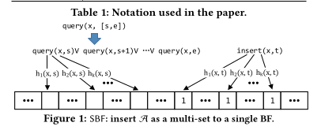
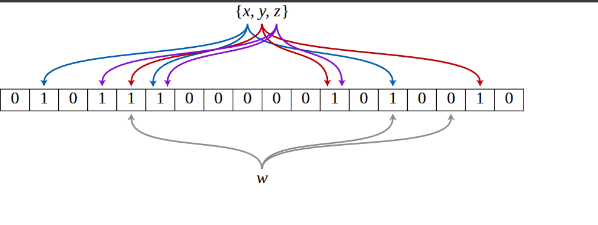
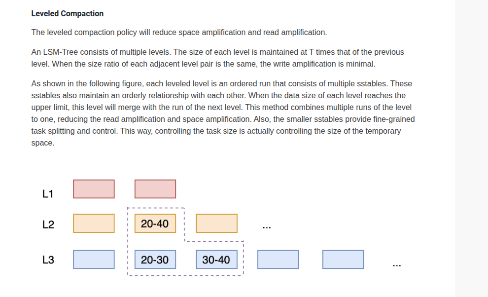
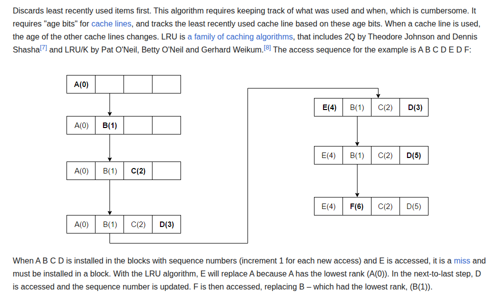

Personalized search lies at the heart of Meta's user experience. To deliver fast, accurate, and
real-time recommendations to millions of users across a petabyte-scale dataset, Meta needed more than a
conventional database—it needed a storage engine built around write-optimized data
structures, efficient compaction strategies, and SSD-aware caching layers.
This section explores the architectural evolution that led Meta to adopt RocksDB to
power personalized search at scale.
Meta responded by building a modular, embedded key-value engine based on RocksDB. It offered the
configurability, write throughput, and compaction control that generalized systems lacked.
Foundation: Log-Structured Merge Trees (LSM Trees)
RocksDB relies on a foundational data structure known as the Log-Structured Merge Tree (LSM
Tree), originally described by O'Neil et al. in their 1996 paper. Unlike B-Trees, LSM Trees
batch inserts in memory and flush them to disk in sorted order, enabling:
Amortized O(log N) write cost
Efficient merge-based compaction
High sequential write throughput on SSDs
Figure: RocksDB's LSM Tree layout with Leveled Compaction. New SSTables
are flushed from memory to disk and later merged level-by-level. Source: RocksDB Wiki.
This structure is ideal for Meta's use case where writes outnumber reads and disk I/O must be minimized.
The LSM Tree also enabled Meta to tune compaction styles—choosing between leveled,
universal, and FIFO strategies depending on access patterns.
Why RocksDB Was a Game Changer
According to RocksDB: Evolution of Development Priorities (Dong et al., 2021), RocksDB allowed
application owners to:
Tune write amplification vs. read efficiency
Optimize cache locality with block-level caching
Control compaction rate and disk layout at column-family level
Figure : Write amplification vs. compaction style. Meta used Universal
Compaction for faster writes at the cost of space efficiency. Source: ACM digital
library (DL) https://dl.acm.org/doi/10.1145/3483840.
Read Optimization: Bloom Filters
Read paths in RocksDB are accelerated using Bloom Filters, a probabilistic data
structure that checks set membership in O(k) time with minimal space. RocksDB associates
Bloom Filters with each SSTable to skip unnecessary disk I/O during point lookups.

Figure: Bloom Filters used with each SSTable to skip reading tables that don't
contain the queried key. Source: O'Neil et al., LSM Tree paper.
Persistent Bloom Filters (PBF), as explored by Peng et al. in SIGMOD 2018, also allow temporal
queries—a crucial capability for searching user signals over time windows, such as "has
user X clicked in the last 10 minutes?".
Outcome: Scaling Personalized Search Efficiently
With RocksDB, Meta achieved:
High ingest speed of real-time user activity
Low p99 latency via LSM + Bloom + Cache
Efficient resource usage across SSD/HDD layers
Section 2: Core Data Structures and Algorithms Used
1. LSM Tree (Log-Structured Merge Tree)
A Log-Structured Merge Tree (LSM Tree) is a write-optimized hierarchical structure
designed for high-ingest systems like databases and key-value stores. Instead of writing directly to
disk for every update (as B-Trees do), LSM Trees accumulate writes in memory and periodically flush
them to disk in bulk. This transforms many small random writes into fewer sequential writes — a
massive win on SSDs.
The tree consists of a memory component (C0) and multiple disk levels (C1, C2...). Each level holds
larger, sorted files, and the system periodically merges files across levels through a process
called compaction.
Figure: LSM Tree layers: writes enter C0 (in-memory) and flush to
sorted disk-based levels (C1, C2...) via compaction. Source: Wikipedia
RocksDB is a high-performance key-value engine built around the LSM Tree model. New data enters a
MemTable in RAM. Once full, it is flushed to disk as an SSTable (Sorted String Table). These
SSTables are compacted into progressively larger levels, maintaining sorted order.
Meta's Mussel system, based on RocksDB, uses this architecture to ingest over 1 million
signals per second — from user views and clicks to host updates — without compromising
read performance.
A Bloom Filter is a probabilistic data structure that answers: "Could this key
exist?" It gives fast lookups in constant time using multiple hash functions and a compact bit
array. The trade-off? It might say "yes" when the answer is "no" (false positives), but it will
never miss a key that exists.
RocksDB uses Bloom Filters with every SSTable to avoid unnecessary disk reads. When looking up a
key, the engine queries the Bloom filter first. If the filter says "definitely not here," the
SSTable is skipped entirely — saving costly disk I/O.

Figure: Bloom filters use multiple hashes to set bits in a bit array.
All bits must be 1 to indicate potential membership. Source: Wikipedia
A MemTable is the first stop for new writes. It's an in-memory data structure —
typically a Skip List or Red-Black Tree — that temporarily stores key-value pairs.
Once it fills up, it flushes its contents to disk as an immutable SSTable.
In RocksDB, this buffering reduces the cost of disk writes and allows compactions to batch multiple
changes efficiently. While active, MemTables also serve recent reads — ensuring low-latency access
to fresh data.
Compaction is the LSM Tree's cleanup crew. It merges SSTables across levels, removes obsolete keys
(e.g., overwritten or deleted), and maintains sorted order. Without compaction, RocksDB would become
a read-performance disaster due to too many SSTables.
RocksDB supports multiple compaction styles:
Leveled Compaction: Aggressively merges SSTables into fixed-size levels. Great
for reads.
Universal Compaction: Flexible, less aggressive merging. Ideal for fast-write
workloads like Meta's signal ingestion pipeline.
FIFO Compaction: Deletes old files in order — used for time-series or log data.

Figure: In Leveled Compaction, newer SSTables are merged downward
into larger levels. Source: RocksDB GitHub Wiki
Amortized: Lower, depending on tuning of levels and compaction triggers
5. Cache Layer (LRU Cache)
RocksDB includes a block cache to store frequently accessed data blocks from
SSTables. It uses the Least Recently Used (LRU) replacement policy — implemented
with a combination of a hash map and a doubly linked list.
This is crucial for performance at Meta: if a user views a listing multiple times in a short period,
the data stays hot in cache, avoiding repeated disk reads and improving response time.

Figure: LRU cache mechanism stores frequently accessed items at the front of a list, evicts least-recently-used ones. Source: Wikipedia
Building a high-performance key-value store means making deliberate tradeoffs between write speed,
read latency, memory usage, and compaction cost. Each of the data structures introduced earlier (LSM
Tree, Bloom Filter, MemTable, etc.) contributes to specific performance characteristics.
After RocksDB
Writes: Batched via MemTables, flushed to disk as sorted files → high
throughput
Reads: Bloom filters and LRU cache reduced tail latencies dramatically
Disk usage: Compaction reduced fragmentation and deleted stale keys
Scalability: Embedded RocksDB engines at service boundaries eliminated the need
for separate DB clusters
Component-by-Component Tradeoffs
Component
Benefit
Tradeoff
LSM Tree
Fast writes (sequential, batched)
Slower reads unless mitigated with filters or caches